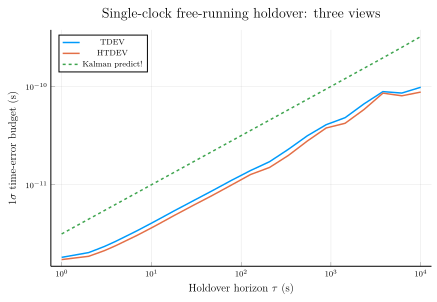

Single-clock holdover: TDEV vs HTDEV vs Kalman prediction
When a clock disconnects from its reference, what is the predicted 1σ time-error budget at any holdover horizon $\tau$?
This tutorial answers the question three ways on the same fixture and compares them on a single log-log plot:
- TDEV — time deviation, the σ_x quantity $\sigma_x(\tau) = (\tau/\sqrt{3})\,\mathrm{MDEV}(\tau)$. Statistical estimate from the observed phase residuals.
- HTDEV — Hadamard time deviation. Same idea as TDEV, but built from the third difference instead of the second, so it rejects constant frequency drift. Useful when the clock has a persistent ageing term.
- Kalman forward prediction — propagate a
ThreeStateClockcovariance forward by $\tau$ viapredict!(no measurements) and read 1σ time error off the top-left entry ofP(τ). This is the state-space, Bayesian view of the same budget.
When the clock model used by the KF matches the underlying noise mix, the three curves agree closely. When the data carries a constant frequency drift that the KF model doesn't include, TDEV inflates while HTDEV and the KF prediction stay tight — that's the pedagogical payoff.
1. Frame the problem
A clock under steering tracks a reference (GPS, a maser, a coordinated time scale) by continuously pulling its frequency back toward the reference's pace. When the reference is lost, the steering loop has nothing to lock to and the clock free-runs: it holds over. From that moment on, the clock's accumulated time error against the would-be reference grows at a rate set entirely by the clock's own intrinsic stability.
The 1σ time-error budget at a horizon τ is bounded by the clock's time deviation σ_x(τ). TDEV (or HTDEV) evaluated on a record of free-running phase residuals delivers a budget read-out at every τ in the record's support range. The Kalman forward prediction delivers the same quantity from a parametric clock model, without any observed data — useful for ahead-of-time design.
2. Build a Cs-like clock model
A commercial caesium-beam clock is dominated by white-FM noise (WHFM) at short averaging times and random-walk-FM (RWFM) at long ones. We pick representative spectral densities:
using Random
using LinearAlgebra
using SigmaTau
q1 = 1.0e-23 # WFM strength
q2 = 1.0e-32 # RWFM strength
q3 = 0.0 # IRWFM (negligible for Cs over 10⁴ s horizons)
tau0 = 1.0
clock = ThreeStateClock(tau = tau0, q1 = q1, q2 = q2, q3 = q3)ThreeStateClock(1.0, 0.0, 1.0e-23, 1.0e-32, 0.0)3. Simulate a phase record from the model
Forward-simulate by sampling the process noise covariance Q at each step (the Cholesky factor L makes that one matvec). Optionally inject a constant frequency offset to make TDEV diverge from HTDEV at long τ — that's the configuration that exercises the drift-rejection of HTDEV vs the drift-blindness of the KF prediction.
Random.seed!(42)
N = 100_000
Φ = state_transition(clock)
Q = process_noise(clock)3×3 StaticArraysCore.SMatrix{3, 3, Float64, 9} with indices SOneTo(3)×SOneTo(3):
1.0e-23 5.0e-33 0.0
5.0e-33 1.0e-32 0.0
0.0 0.0 0.0q3 = 0 ⇒ Q is rank-2 (drift row/col are zero). Cholesky the 2×2 phase/freq sub-block instead of patching with a ridge — a ridge on the (3,3) entry would inject fake IRWFM noise that Φ integrates into the phase as a τ³ run-away over 10⁵ steps.
L2 = cholesky(Q[1:2, 1:2]).L
phase = zeros(N)
let x_state = zeros(3)
for k in 1:N
w12 = L2 * randn(2) # phase + freq increments only
x_state = Φ * x_state + [w12[1], w12[2], 0.0]
phase[k] = x_state[1]
end
end
data = PhaseData(phase, tau0)PhaseData{Float64}([2.4929993076373545e-12, -2.702662858284963e-13, -2.4909637877986016e-12, -5.378049589135951e-12, -8.28639015686165e-13, 1.6887945313669201e-12, -1.8794370611297986e-13, 2.823367917445451e-12, 1.8910085332934114e-12, 5.589089470500608e-12 … -2.2231586307135697e-9, -2.2194935578861254e-9, -2.216529241629579e-9, -2.214986225916658e-9, -2.213080635211545e-9, -2.2121003221128174e-9, -2.2117704306766157e-9, -2.212561335231343e-9, -2.2190412218149797e-9, -2.224838325311167e-9], 1.0)The fixture above is noise-only — the WHFM and RWFM contributions are drift-free in expectation, so TDEV and HTDEV will agree. To exercise HTDEV's drift-rejection (and watch TDEV inflate while HTDEV / KF stay clean), add a quadratic ageing term to phase before wrapping it in PhaseData:
d_f = 1.0e-18 # frequency ageing rate (1/s)
phase .+= 0.5 .* d_f .* (collect(0:N-1) .* tau0).^2A constant frequency offset (linear in t) doesn't inflate TDEV — both TDEV and HTDEV cancel constants. It's the time-dependence of frequency that separates them.
4. Compute TDEV and HTDEV
Both are σ_x quantities (units of seconds), evaluated on a log-spaced averaging-factor grid:
m_values = unique(round.(Int, exp10.(range(0, 4, length = 20))))
result_tdev = tdev(data, m_values; calc_ci = false)
result_htdev = htdev(data, m_values; calc_ci = false)StabilityResult(:htdev, [1.0, 2.0, 3.0, 4.0, 7.0, 11.0, 18.0, 30.0, 48.0, 78.0, 127.0, 207.0, 336.0, 546.0, 886.0, 1438.0, 2336.0, 3793.0, 6158.0, 10000.0], [1.73521415799121e-12, 1.8731941421860266e-12, 2.1398919933501198e-12, 2.4013491006526103e-12, 3.074446786915277e-12, 3.8147151167190655e-12, 4.879505904450435e-12, 6.252232260385841e-12, 7.81564490298607e-12, 9.949654732639611e-12, 1.2702466406909998e-11, 1.500149556146197e-11, 1.989787282977253e-11, 2.7873349583975603e-11, 3.7826959627961066e-11, 4.220828210011058e-11, 5.82816042309007e-11, 8.543688306390796e-11, 8.02951565693251e-11, 8.759261045352448e-11], Symbol[], Float64[], Float64[], Float64[])5. Kalman forward prediction
Propagate clock's covariance through the same horizon range starting from a perfectly known initial state (P₀ = 0). At each m-step we read sqrt(P[1,1]) — the 1σ phase uncertainty accumulated under the model's process noise alone.
We deliberately do not tell the KF about the constant frequency offset (q3 = 0, no drift state at simulation), so the KF prediction is "drift-blind" — exactly the same blindness HTDEV enjoys via its third-difference operator.
StandardKalmanFilter's predict! is gated on est.k > 0 — it only advances after at least one measurement has been folded in via update!. For a measurement-less forward propagation we advance Φ and Q ourselves; the same matrices predict! would use internally are exposed via state_transition(clock) and process_noise(clock).
N_max = maximum(m_values)
m_to_idx = Dict(m => i for (i, m) in enumerate(m_values))
holdover_var = zeros(length(m_values))
let P = zeros(3, 3)
for k in 1:N_max
P = Φ * P * Φ' + Q
if haskey(m_to_idx, k)
holdover_var[m_to_idx[k]] = P[1, 1]
end
end
end
holdover_sigma = sqrt.(holdover_var)20-element Vector{Float64}:
3.1622776606954255e-12
4.472135957981003e-12
5.4772255832675e-12
6.32455533720224e-12
8.36660033366799e-12
1.0488088693211299e-11
1.3416408589484743e-11
1.7320510673764793e-11
2.1908910713223522e-11
2.792850840700232e-11
3.5637155160637265e-11
4.5497577581779074e-11
5.796659765347639e-11
7.389548410505233e-11
9.413988716189009e-11
1.1995795874210872e-10
1.5297872737798167e-10
1.9522268753278525e-10
2.4971662136850713e-10
3.214550253663885e-106. Side-by-side comparison
Three curves on one log-log axis. Two things to read off the plot:
- Slopes. TDEV / HTDEV both pick up the +1/2 slope (WHFM) at short τ and the +3/2 slope (RWFM) at long τ. The Kalman prediction tracks the same dominant-noise transition through the analytical Q matrix. Same physics, three estimators.
- Vertical offset. The KF prediction sits a factor of ≈ √6 above TDEV across the full range. That's the structural conversion between σ_x as a structure-function (TDEV's second-difference operator over a τ-window) and σ_x as the RMS phase deviation of a state propagated for τ seconds. Both are valid 1σ holdover budgets — the choice of which to quote in a spec sheet is a community convention, not a physics distinction. (For the Cs-like WHFM-dominated regime, the analytical relationship is
KF = TDEV · √6; the WPM and RWFM regimes have their own constant factors.)
In this noise-only fixture, TDEV and HTDEV are nearly identical. Add the ageing term from the note above to drive them apart; HTDEV and the KF prediction will stay clean while TDEV inflates.
using Plots
plot(result_tdev.tau, result_tdev.dev;
label = "TDEV",
xscale = :log10, yscale = :log10,
xlabel = raw"Holdover horizon \(\tau\) (s)",
ylabel = "1σ time-error budget (s)",
title = "Single-clock free-running holdover: three views",
legend = :topleft,
lw = 1.5)
plot!(result_htdev.tau, result_htdev.dev;
label = "HTDEV",
lw = 1.5)
plot!(result_tdev.tau, holdover_sigma;
label = "Kalman predict!",
ls = :dash,
lw = 1.5)
7. Read-out at a few horizons
Pick three horizons (100 s, 1000 s, 10 000 s) and print all three estimates side-by-side:
function readout(tau_grid, curve, target_tau)
i = argmin(abs.(tau_grid .- target_tau))
(tau = tau_grid[i], value = curve[i])
end
for τ_target in (100.0, 1_000.0, 10_000.0)
t_tdev = readout(result_tdev.tau, result_tdev.dev, τ_target)
t_htdev = readout(result_htdev.tau, result_htdev.dev, τ_target)
t_kf = readout(result_tdev.tau, holdover_sigma, τ_target)
@info "Horizon τ ≈ $(t_tdev.tau) s" tdev=t_tdev.value htdev=t_htdev.value kf=t_kf.value
end┌ Info: Horizon τ ≈ 78.0 s
│ tdev = 1.109398917438083e-11
│ htdev = 9.949654732639611e-12
└ kf = 2.792850840700232e-11
┌ Info: Horizon τ ≈ 886.0 s
│ tdev = 4.08595020909407e-11
│ htdev = 3.7826959627961066e-11
└ kf = 9.413988716189009e-11
┌ Info: Horizon τ ≈ 10000.0 s
│ tdev = 9.808205514057224e-11
│ htdev = 8.759261045352448e-11
└ kf = 3.214550253663885e-108. When to use which
- TDEV when the clock's drift has already been removed (e.g. by a steering loop that estimates and subtracts a frequency offset before opening). What you observe is then close to the noise-only behaviour and TDEV is a tight 1σ budget.
- HTDEV when drift may still be present in the record. The third-difference operator removes constant frequency from the estimate, so HTDEV gives a clean drift-free read-out you can compare directly to model predictions.
predict!with aThreeStateClockwhen you want a holdover budget before you have observed data — designing a system, sizing margins, choosing a clock. Plug in the manufacturer's noise spec and read sqrt(P[1,1]).
All three approaches work from the same noise spec; the choice is about what you already know vs what you're trying to learn.